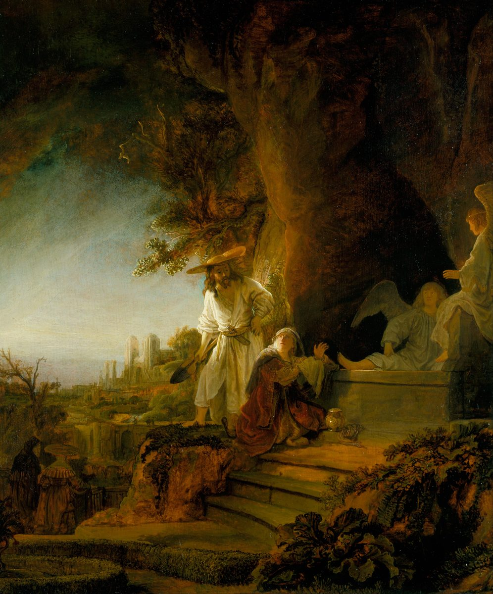

Juan 20 — La Traducción Mister

⚠ Rembrandt pinta el momento del error de María (v15): su Jesús lleva un ancho sombrero de paja de hortelano y una pala, de modo que el espectador lo ve exactamente como lo ve María, un efecto que el Evangelio solo reporta en la sola palabra «hortelano». Juan nunca dice qué vestía ni qué llevaba; el sombrero y la pala son la lectura que Rembrandt hace de esa palabra. Los dos ángeles son la pareja de los vv12–13, y la mano levantada y el rostro alzado de María captan el instante antes de que él pronuncie su nombre (v16). La ciudad amurallada a lo lejos representa a Jerusalén, como en la mayoría de las pinturas de la escena.

Notas sobre esta traducción
⚠ «El primer día de la semana» abre este capítulo con las mismas cuatro palabras griegas que abren el capítulo de la resurrección en Lucas (tē de mia tōn sabbatōn, Lucas 24:1, ya en estas páginas); Marcos tiene la misma frase sin el de (Marcos 16:2), y solo Mateo la construye de otro modo, eis mian sabbatōn (Mateo 28:1, todos ya en estas páginas). Literalmente la frase es «el primero de los sábados» —véase la entrada del diccionario—, y este Evangelio la usa dos veces: aquí para el amanecer y, en forma más breve, para la tarde del mismo día (v19).
⚠ El aviso de María lleva un plural que la escena nunca explica: «no sabemos dónde lo han puesto» (v2, oidamen), aunque ella es la única mujer que Juan nombra y sus propias palabras a los ángeles están en singular, «no sé» (v13, oida). Los otros Evangelios envían a varias mujeres a este sepulcro (Marcos 16:1; Lucas 24:10, ambos ya en estas páginas), y el plural puede ser un rastro de ellas; el texto no lo dice. La RV 1909 y la RV60 leen «no sabemos dónde le han puesto», la NVI lee «no sabemos dónde lo han puesto» y la TNM 1987 también conserva el plural: «no sabemos dónde lo han puesto».
La carrera se cuenta con un ganador, y el ganador no es Pedro. «El otro discípulo» —el que Jesús amaba, como lo nombra el v2— «corrió más rápido que Pedro» (v4) y es «el que había llegado primero» otra vez en el v8, pero se detiene en el umbral; Pedro, detrás de él, entra primero. El verbo del vistazo agachado, parakyptō (v5), es el que se usa de María en el v11 y el que Lucas da a Pedro solo (Lucas 24:12, ya en estas páginas).
⚠ Los lienzos de la tumba se describen dos veces, con una precisión que responde a un capítulo anterior. Están «los lienzos de lino» (othonia, vv5–7), la misma palabra de las envolturas de 19:40 (ya en estas páginas), y aparte un soudarion que había estado sobre su cabeza, «enrollado aparte, en un solo lugar» (v7). Juan ya usó esa segunda palabra una vez, de Lázaro, que salió de su tumba todavía atado de pies y manos, con «el rostro envuelto en un paño», y que necesitó que otros lo desataran (11:44, ya en estas páginas); aquí los lienzos simplemente se quedan atrás y el paño de la cabeza está puesto aparte. La palabra aparece en solo cuatro versículos del Nuevo Testamento, y estos dos versículos de Juan son dos de ellos. Su verbo en el v7, entylissō, es el que Mateo y Lucas usan de lo que José hizo con el cuerpo mismo (Mateo 27:59; Lucas 23:53, ambos ya en estas páginas) —tres versículos en total—, y aquí se dice de un paño sin cuerpo dentro. El anaquel: la RV 1909, la RV60 y la NVI dicen «el sudario», y la TNM 1987 «el paño»; para los lienzos, la RV 1909 y la RV60 dicen «lienzos», mientras que la NVI y la TNM 1987 dicen «vendas», y esta traducción dice «lienzos de lino», como en 19:40.
⚠ «Vio y creyó» (v8) va seguido enseguida de «porque todavía no entendían la Escritura» (v9), y el griego nunca dice qué creyó el otro discípulo. Las versiones del anaquel español no añaden un complemento: la RV 1909 lee «vió, y creyó», la RV60 «vio, y creyó», la NVI «vio y creyó» y la TNM 1987 «vio y creyó», todas con el verbo desnudo, como el griego. Un lector puede tomarlo como el primer destello de fe en la resurrección, o como creer que el aviso de María era cierto y el cuerpo de veras no estaba; el versículo siguiente, y los dos hombres que se van a casa, pesan contra la lectura más plena, y esta traducción no elige. La NVI, además, pone «Jesús» en el v9 («la Escritura que dice que Jesús tenía que resucitar») donde el griego solo dice «él». Qué Escritura se tiene en mente, el Evangelio tampoco lo dice.
Dos ángeles de blanco dicen una sola frase y dejan que María conteste. Están sentados «uno a la cabecera y otro a los pies» del lugar vacío (v12) y solo preguntan «Mujer, ¿por qué lloras?» (v13) —la misma pregunta, palabra por palabra, que hace después la figura que está detrás de ella (v15), añadiendo «¿A quién buscas?». El mensajero de Mateo y el joven de Marcos anuncian la resurrección sin rodeos (Mateo 28:6; Marcos 16:6, ambos ya en estas páginas); Lucas, como Juan, tiene dos (Lucas 24:4, ya en estas páginas); los ángeles de Juan no anuncian nada, y la noticia vendrá de la propia boca de Jesús. Algunos lectores han oído a los dos querubines que se miran sobre el propiciatorio (Éxodo 25:18–20, ya en estas páginas) en una pareja sentada en los dos extremos del lugar donde yació el cuerpo; el texto no traza esa línea.
⚠ «El hortelano» (v15, kēpouros) aparece solo aquí en el Nuevo Testamento, y completa una palabra que 19:41 plantó: la tumba estaba en un kēpos, un huerto, y el guardián del huerto es la primera persona que María cree que es Jesús. Su «Señor» es kyrie, la misma palabra (kyrios) que acaba de usar de él como «el Señor» (vv2, 13; véase el diccionario), de modo que una sola palabra lleva a la vez su error y la verdad. Génesis pone al primer ser humano en un huerto «para que lo trabajara y lo cuidara» (Génesis 2:15, ya en estas páginas, todavía no en español); este Evangelio no traza esa línea, y esta traducción no la reclama como argumento del texto, solo anota dónde vuelve la palabra del huerto.
«¡María!» (v16) es una sola palabra, y es todo el reconocimiento. Jesús ha dicho en este Evangelio que el pastor «llama a sus propias ovejas por nombre» y que «las ovejas lo siguen, porque conocen su voz» (10:3–4, ya en estas páginas); aquí se representa en un solo nombre. En el griego impreso en esta página el narrador escribe su nombre Maria (vv1, 11), mientras que la palabra que Jesús pronuncia se escribe Mariam, la forma semítica, que el propio narrador usa después en el v18; el texto impreso marca ambas grafías como puntos donde los manuscritos difieren. Ella responde en el idioma de esa forma: «en hebreo, Rabbouní». ⚠ Hebraisti probablemente significa arameo aquí, como en 19:13 (ya en estas páginas), y el anaquel se divide sobre la palabra: la TNM 1987 y la TNM 2019 imprimen «en hebreo»; la RV 1909 y la RV60 omiten la frase y dejan solo la glosa («que quiere decir, Maestro»); la NVI pasa el «hebreo» a la glosa («que en hebreo significa “Maestro”»); y el griego impreso marca Hebraisti como uno de los lugares donde los manuscritos difieren.
⚠ «No te aferres a mí» (v17, mē mou haptou) es un mandato en tiempo presente —«deja de agarrarte», no una prohibición de ser tocado alguna vez—, y el anaquel se divide en tres. La RV 1909 y la RV60 leen «No me toques»; la NVI lee «No me detengas»; y la TNM 1987 lee «Deja de colgarte de mí» y la TNM 2019 «Deja de agarrarte de mí», la lectura que esta traducción sigue en lo esencial (véase haptomai). El latín noli me tangere dio nombre a la escena entre los pintores de Occidente. El contacto en sí no puede ser el problema: en el relato de Mateo las mujeres «le agarraron los pies» esa misma mañana y él no se lo impide (Mateo 28:9), el Jesús de Lucas dice «Tóquenme y vean» (Lucas 24:39), y a Tomás se le invita a meter el dedo (v27) —aunque ninguno de los tres usa este verbo. La razón que da Jesús es una partida todavía por delante: «todavía no he subido», y luego, en presente, «subo», el movimiento que 6:62 había prometido: «el Hijo del Hombre subir adonde estaba primero» (ya en estas páginas).
«Mis hermanos» (v17) es el único lugar de este Evangelio donde Jesús lo dice de sus discípulos —la misma palabra que el Jesús resucitado de Mateo usa con las mujeres esa misma mañana (Mateo 28:10, ya en estas páginas)—, y la sigue con una frase donde cada posesivo se duplica: «mi Padre y Padre de ustedes, mi Dios y Dios de ustedes». «Mi Dios» en labios de Jesús es raro en los cuatro Evangelios: en estas formas aparece solo en el grito desde la cruz (Mateo 27:46; Marcos 15:34, ambos ya en estas páginas), aquí, y luego en boca de Tomás, dirigido al propio Jesús, once versículos después (v28).
⚠ «Paz a ustedes» (vv19, 21, 26) es la entrega de una promesa: eirēnē aparece en solo cinco versículos de este Evangelio, y los otros dos son «Paz les dejo; mi paz les doy» (14:27) y «Les he dicho estas cosas para que en mí tengan paz» (16:33, ambos ya en estas páginas). Es el saludo hebreo ordinario (shalom; véase el diccionario), dicho a hombres tras puertas cerradas «por miedo a los dirigentes judíos» —el miedo que hizo de José de Arimatea un discípulo secreto (19:38, ya en estas páginas)—, de modo que llega justo donde hacía falta el «No se turbe el corazón de ustedes, ni se acobarde» de 14:27.
«Los discípulos se alegraron al ver al Señor» (v20) cumple una promesa del discurso de despedida con la misma raíz y el mismo par de ver y alegrarse: «volveré a verlos, y su corazón se alegrará, y nadie les quita su gozo» (16:22, ya en estas páginas; charēsetai allí, echarēsan aquí). Lo que les muestra es «las manos y el costado», el costado de la herida de lanza de 19:34 (ya en estas páginas); la palabra para el costado no aparece en ninguno de los otros tres Evangelios, y el Jesús de Lucas muestra en cambio «las manos y los pies» (Lucas 24:40, versículo que esta traducción imprime entre dobles corchetes, ya en estas páginas).
⚠ «Como el Padre me ha enviado, yo también los envío» (v21) cambia de verbo a mitad de frase —el Padre ha enviado (apestalken) pero Jesús envía (pempō)— y el Evangelio no da señal de que el cambio signifique algo. Usa los dos verbos del envío del Hijo por el Padre a lo largo de todo el libro, y la oración del capítulo 17 tenía el primero dos veces en un solo versículo: «Así como tú me enviaste al mundo, yo también los he enviado al mundo» (17:18, ya en estas páginas). Esta traducción imprime «enviado» y «envío» y no construye una distinción que el Evangelio no traza; el encargo que fue una oración en el capítulo 17 es ahora una frase dicha a la sala.
⚠ «Sopló sobre ellos» (v22, enephysēsen) es la única aparición del verbo en todo el Nuevo Testamento, y es la forma exacta que la traducción griega de Génesis usa cuando Dios sopla en el primer ser humano: «y sopló (enephysēsen) en su rostro aliento de vida» (Génesis 2:7 en la versión griega; Génesis 2:7 está ya en estas páginas, todavía no en español, y su texto, traducido del hebreo, dice «sopló en su nariz»). La versión griega de Ezequiel 37:9 usa el mandato emparentado al viento sobre los huesos secos, «sopla sobre estos muertos» (emphysēson; Ezequiel 37, todavía no en estas páginas). El Evangelio no remite a ninguno de los dos versículos; el verbo compartido es la evidencia, y lo que pone junto al don de «espíritu» es que la palabra pneuma significa también aliento y viento (pneuma). Responde además a 7:39 —«el Espíritu aún no había sido dado, ya que Jesús todavía no había sido glorificado» (ya en estas páginas)— con la primera escena después de la cruz y la tumba. Véase la entrada del diccionario.
⚠ «Reciban espíritu santo» no lleva artículo en el griego (pneuma hagion), y esta traducción lo imprime como lo hace el griego, en minúscula, como en Lucas 2:25 (ya en estas páginas), reservando «el Espíritu Santo» para donde el artículo está, como con el Defensor en 14:26 (ya en estas páginas). La RV 1909 imprime «Tomad el Espíritu Santo», la RV60 «Recibid el Espíritu Santo» y la NVI «Reciban el Espíritu Santo»; la TNM 1987 es la única que coincide con el desnudo «Reciban espíritu santo» del griego. Es un punto sobre la gramática del griego, no un veredicto doctrinal.
⚠ El v23 es un par de pasivos perfectos —«les han sido perdonados» (apheōntai), «les han sido retenidos» (kekratēntai)— y el anaquel se divide en la segunda mitad. La RV 1909 lee «serán retenidos», la RV60 «les son retenidos» y la TNM 1987 «quedan retenidos»: las tres conservan un verbo de retener, mientras que la NVI lo vuelve negativo, «a quienes no se los perdonen, no les serán perdonados», y la TNM 2019 igual, «si no se los perdonan, no le quedan perdonados». El verbo griego es krateō, «sujetar, agarrar», y no aparece en ningún otro lugar de este Evangelio; «retengan» lo conserva, donde las versiones negativas consiguen una frase más suave perdiéndolo. El griego impreso marca además el primer verbo como un punto donde los manuscritos difieren. Los paralelos más cercanos de Mateo usan otros verbos, «atar» y «desatar» (Mateo 16:19; 18:18, ambos ya en estas páginas), y esta traducción no los equipara.
Tomás llega ya descrito: «uno de los Doce, llamado el Gemelo» (v24), el mismo epíteto que Juan le dio en 11:16, donde dijo «Vamos también nosotros, para morir con él» (ya en estas páginas). El hombre que se ofreció a morir con Jesús es el que no estaba en la sala. La RV 1909 imprime «que se dice el Dídimo» y la RV60 «llamado Dídimo», con el nombre griego; la NVI dice «al que apodaban el Gemelo», la TNM 1987 «que se llamaba El Gemelo» y la TNM 2019 «al que llamaban el Gemelo», lo traducen, como lo hace esta traducción (véase Tomás).
⚠ Las condiciones de Tomás son exactas —la marca de los clavos, un dedo en ella, una mano en el costado (v25)— y Jesús se las devuelve en el v27 casi punto por punto, aunque el Evangelio nunca dice cómo lo supo. La RV 1909 y la RV60 dicen «la señal de los clavos» y «el lugar de los clavos», la NVI «la marca de los clavos», la TNM 1987 «la impresión de los clavos» y la TNM 2019 «la marca de los clavos». Su rechazo usa la doble negación enfática (ou mē pisteusō), de ahí «jamás»: la TNM 1987 dice «de ninguna manera creeré» y la TNM 2019 «jamás lo voy a creer». Y el texto nunca dice que lo hiciera. Después del v27 lo siguiente que hace Tomás es hablar (v28), y la respuesta de Jesús es «Porque me has visto» (v29), no «tocado». El dedo de los pintores entrando en la herida es un añadido de la tradición; el griego lo omite.
La palabra griega para Tomás es apistos, «incrédulo», frente a pistos, «creyente» (v27) —un rechazo, no una vacilación—, y «Tomás el incrédulo», un apodo que el Evangelio nunca usa, descansa en esta sola escena. El verbo griego de la vacilación verdadera es otro, distazō, y aparece en solo dos versículos del Nuevo Testamento, ambos en Mateo (14:31; 28:17, ambos ya en estas páginas), y ninguno es este. La TNM 2019 lee «Deja de dudar y cree», convirtiendo el par de adjetivos en un verbo de duda; la RV 1909 lee «no seas incrédulo, sino fiel», la RV60 «no seas incrédulo, sino creyente» y la NVI «no seas incrédulo, sino hombre de fe», con los adjetivos, y la TNM 1987 conserva también el verbo de llegar a ser («deja de ser incrédulo, y hazte creyente»). El griego dice ginomai, «hacerse», y esta traducción conserva «no te hagas».
⚠ «¡Mi Señor y mi Dios!» (v28, ho kyrios mou kai ho theos mou) se dice a él —el griego dice que Tomás «le dijo»— y ambos sustantivos pertenecen al vocabulario habitual de la Biblia griega para el Dios de Israel. Kyrios es la palabra que ocupa el lugar del nombre divino (diccionario), y el clamor del salmista a Jehová para que despierte y juzgue es «Dios mío y Señor mío» (Salmo 35:23, todavía no en estas páginas; la versión griega de ese versículo, Salmo 34:23 en su numeración, pone el artículo delante de ambos sustantivos, como aquí). El Evangelio comenzó diciendo que la Palabra «era Dios» (Juan 1:1, ya en estas páginas, todavía no en español); este es el punto en que alguien dentro del relato se lo dice en voz alta a él, y queda justo antes de la declaración del propósito del Evangelio (v31). Las versiones del anaquel español imprimen las palabras de Tomás como una exclamación sencilla: la RV 1909, la RV60 y la NVI dicen «Señor mío, y Dios mío» (el orden del griego), y la TNM 1987 «Mi Señor y mi Dios».
⚠ El v29 lleva tres diferencias menudas en que el anaquel se divide. El griego impreso aquí termina la primera cláusula con un signo de interrogación —«¿Porque me has visto has creído?»—, y la TNM 1987 lo lee así («¿Porque me has visto has creído?»), mientras que la RV 1909, la RV60 y la NVI lo hacen una afirmación («creíste», «has creído»). La RV 1909 y la RV60 añaden el nombre, «Porque me has visto, Tomás, creíste», que el griego impreso aquí no tiene; la NVI y la TNM 1987 lo omiten. Y makarioi es «Felices» aquí, como en las Bienaventuranzas (diccionario), donde la RV 1909 y la RV60 leen «bienaventurados» y la NVI «dichosos». La bendición responde a una cláusula plantada tres capítulos atrás: la oración de Jesús por «los que crean en mí mediante la palabra de ellos» (17:20, ya en estas páginas) —las personas sobre quienes habla el v29 son, según los propios términos del Evangelio, sus lectores.
El Evangelio declara su propio propósito, y lo hace con las palabras de Marta. «Que Jesús es el Cristo, el Hijo de Dios» (v31) son los mismos dos títulos en el mismo griego (ho christos ho huios tou theou) que su confesión en 11:27 (ya en estas páginas), que la nota final de ese capítulo planteó como la tesis del Evangelio; y «vida en su nombre» cierra un anillo con el «a los que creen en su nombre» del prólogo (Juan 1:12, ya en estas páginas, todavía no en español).
⚠ «Muchas otras señales» que no están «escritas en este libro» (v30) es la propia descripción que el Evangelio hace de sí mismo como una selección. Sēmeion es su palabra habitual para los milagros (diccionario): Caná fue «el comienzo de las señales» (Juan 2:11, ya en estas páginas, todavía no en español), y este versículo dice que la cuenta nunca fue completa. El capítulo 21 dirá lo mismo otra vez, con más extensión, con un mundo que no podría contener los libros (Juan 21:25, todavía no en estas páginas).
⚠ El verbo pisteuēte, «crean», es un punto donde los manuscritos difieren en una sola letra: el griego impreso tiene el subjuntivo presente, «para que sigan creyendo», donde otros manuscritos tienen el aoristo, «para que lleguen a creer», y se ha argumentado que la diferencia incide en si el Evangelio se escribió para ganar a quienes están fuera o para sostener a quienes ya creen. Los estudiosos no coinciden en que el tiempo verbal baste por sí solo para decidirlo, y las versiones españolas no muestran la diferencia: la RV60 lee «para que creáis», la NVI «para que ustedes crean». Esta traducción imprime «crean» y deja la cuestión abierta.
Patrones para llevar adelante.
⚠ Elecciones de traducción. Hoi Ioudaioi continúa la división de los dos capítulos anteriores: «los dirigentes judíos» para el miedo tras las puertas cerradas (v19). Mia tōn sabbatōn es «el primer día de la semana». Othonia es «lienzos de lino» y soudarion «paño» (véase la entrada del diccionario). Mē mou haptou es «No te aferres a mí». Pneuma hagion sin artículo es «espíritu santo». Typos es «marca», Didymos es «el Gemelo» y makarioi es «Felices», como en las Bienaventuranzas. Rabbouni se deja como el arameo que es, con la glosa del propio Evangelio.
Ecos pagados. El paño del rostro de Lázaro (11:44) recibe respuesta en el paño de la cabeza puesto aparte en el v7. El huerto de 19:41 recibe a su hortelano en el v15. El pastor que «llama por nombre a sus propias ovejas» (10:3) lo hace en el v16. La paz de 14:27 y 16:33 llega en los vv19, 21 y 26; la alegría prometida en 16:22, en el v20; el envío de 17:18, en el v21; y «todavía no se había dado el Espíritu» (7:39), en el v22. La escena de Tomás de 11:16 se termina en los vv24–28; «los que crean en mí mediante la palabra de ellos» (17:20) son llamados felices en el v29; y la confesión de Marta (11:27) se vuelve el propósito del propio Evangelio en el v31, todos ya en estas páginas.
Ecos plantados. El discípulo a quien Jesús amaba, que supera a Pedro en la carrera y «vio y creyó» aquí (vv2–8), es el que dice «Es el Señor» desde la barca y a quien se ve siguiendo al final (Juan 21:7, 20, todavía no en estas páginas), y el capítulo 21 lo nombra como el testigo que escribió estas cosas (21:24). Tomás aparece una vez más entre el grupo del lago (21:2), y los libros que el mundo no podría contener cierran el Evangelio (21:25), todos todavía no en estas páginas.
Este capítulo termina el primer final del Evangelio; el propio orden de este libro corre ahora sin interrupción desde el capítulo 1 hasta este capítulo — el siguiente en orden es Juan 21, la mañana en la orilla del lago, el fuego de carbón y la restauración de Pedro.